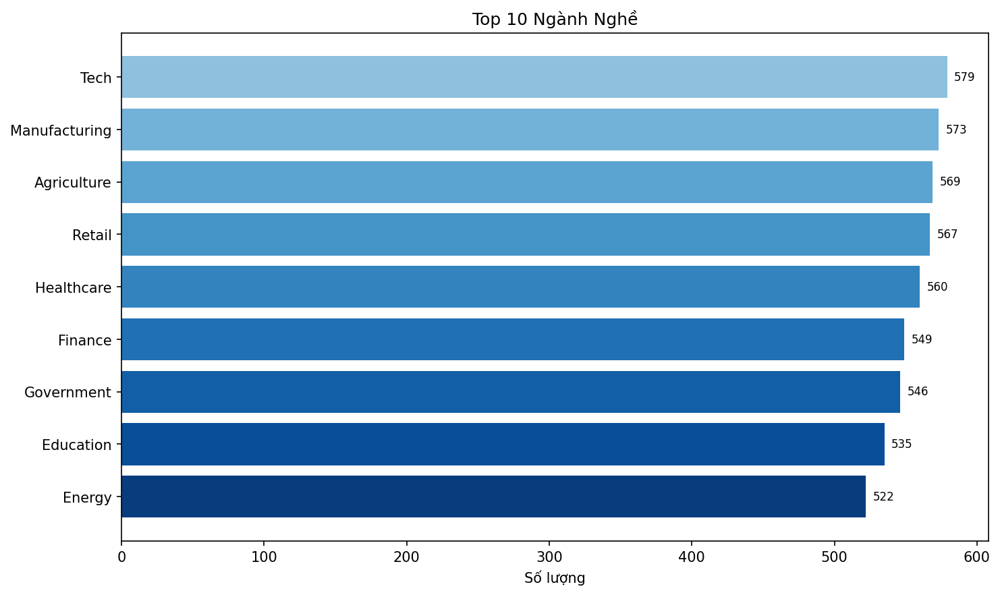
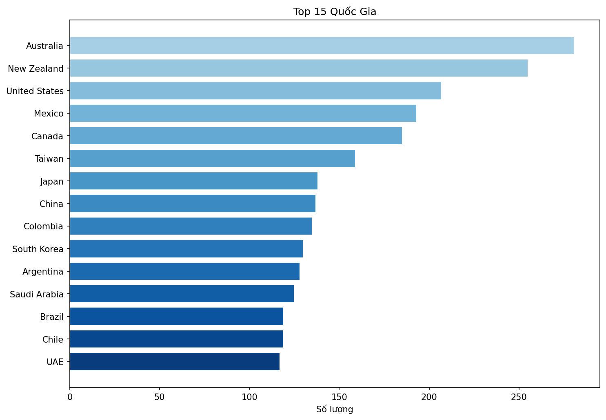
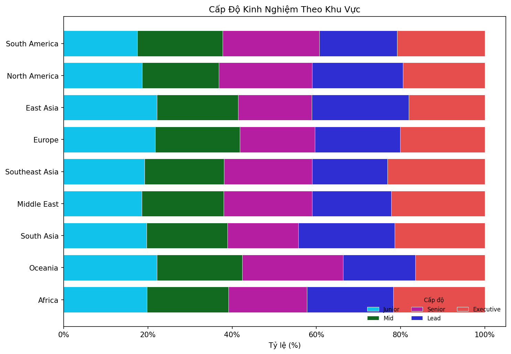
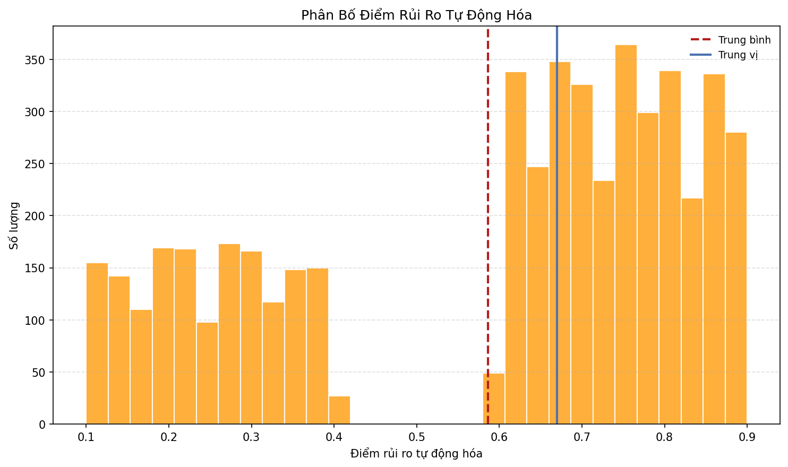
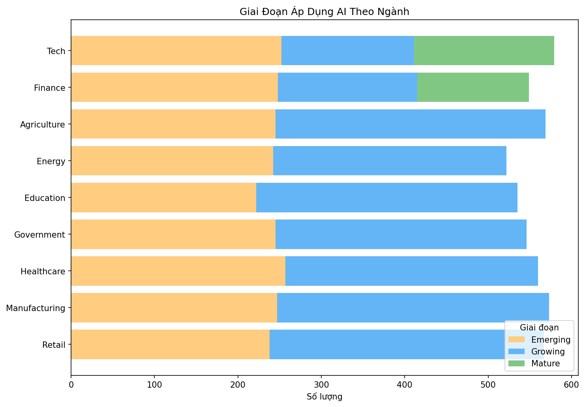
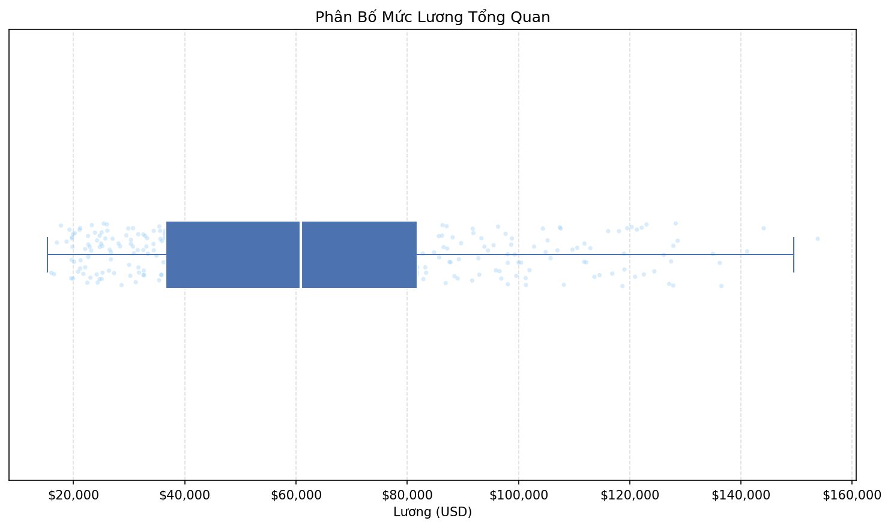
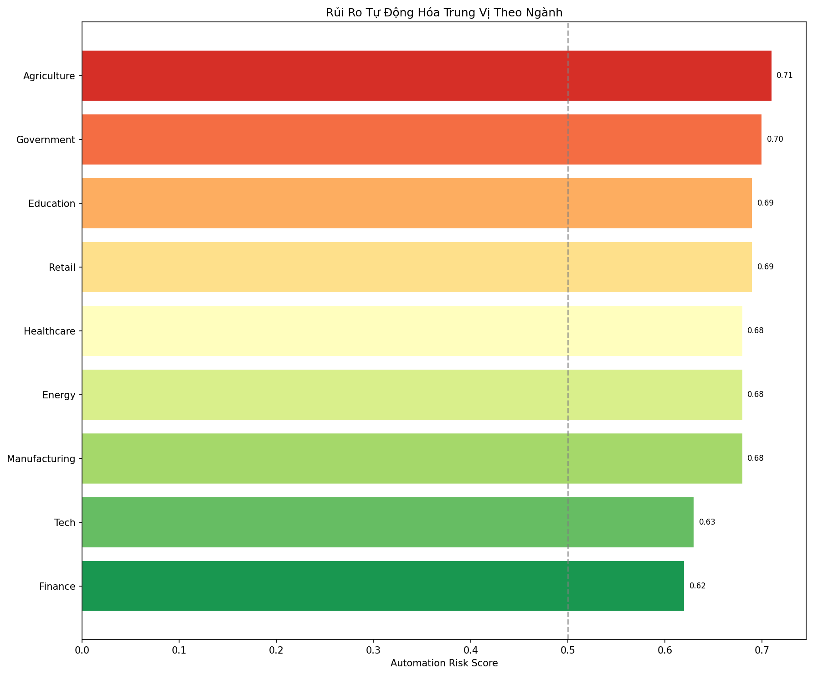
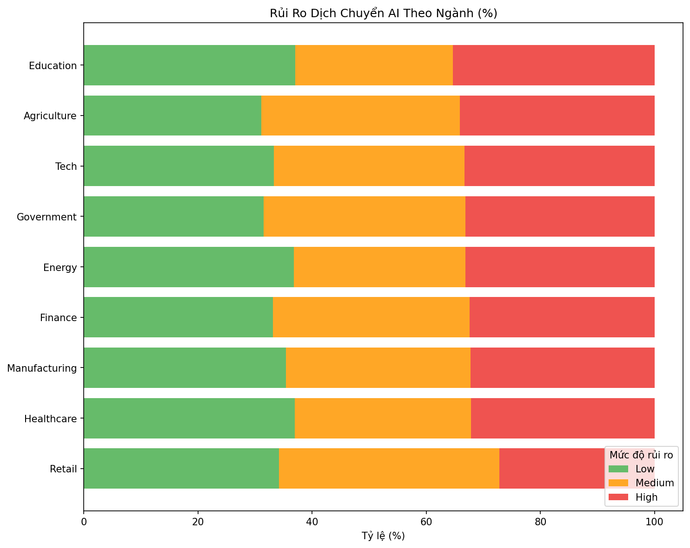

Step 01 - Overview
Job postings by year, top industries, top countries, and seniority by region.




Step 02 - Univariate
AI intensity, automation risk distribution, adoption stage mix, and salary spread.




Step 03 - Bivariate
Salary by seniority, top industries by salary, and automation risk by industry.



Step 04 - Trends
AI mention rate, salary trends, automation risk trends, and reskilling needs.


Step 05 - Skills and Text
Top skills, top AI keywords, reskilling by industry, and displacement risk mix.



Step 06 - Strategic
Risk distribution by adoption stage and optional interactive world maps.

If the interactive maps exist, they will load below. Otherwise, run the step 06
script with Plotly installed to generate the HTML outputs.